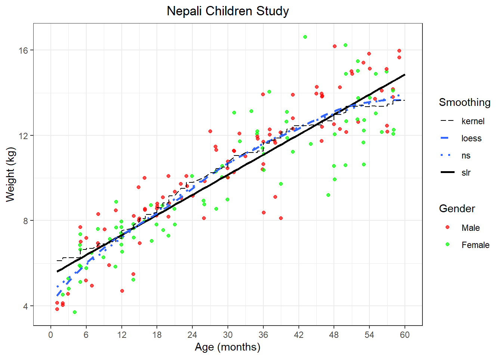
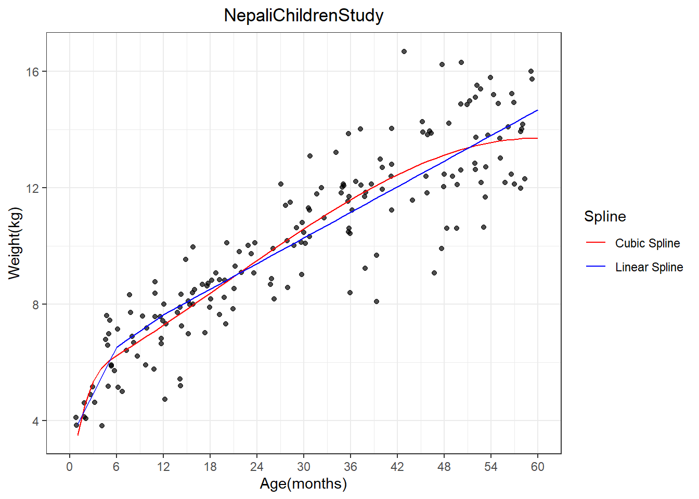
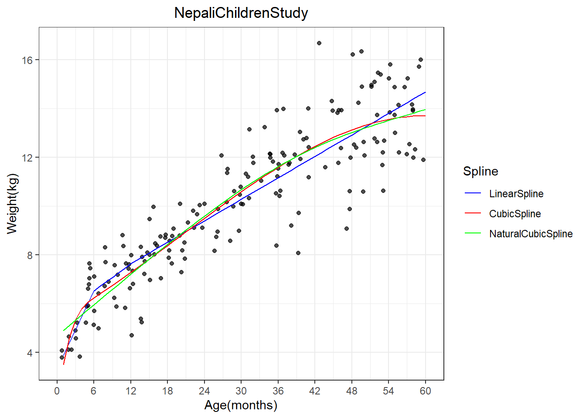
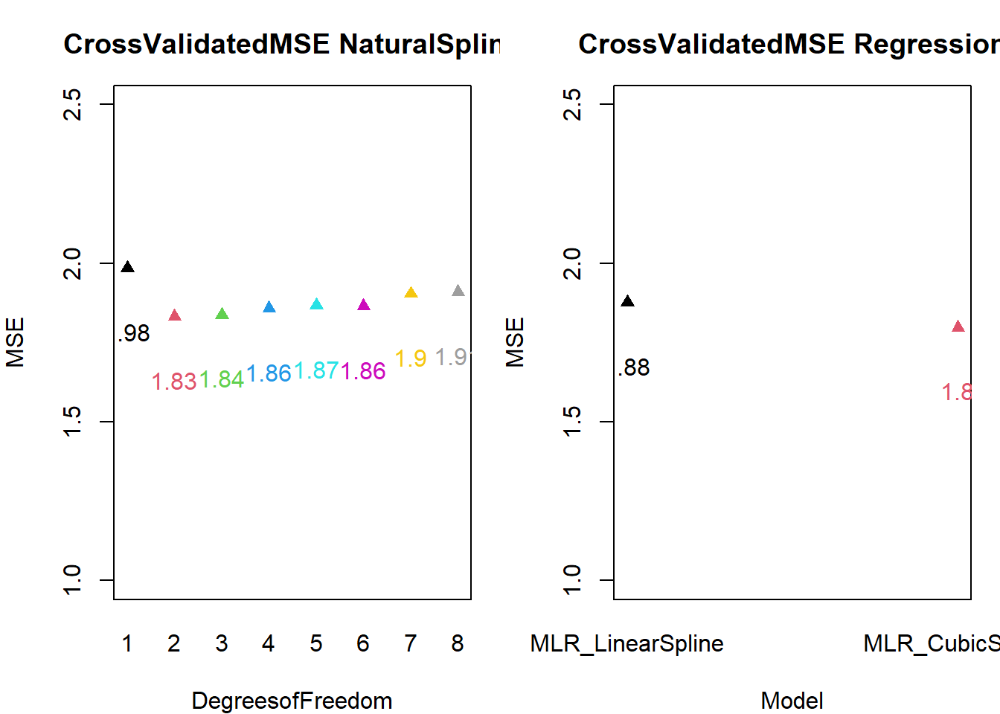
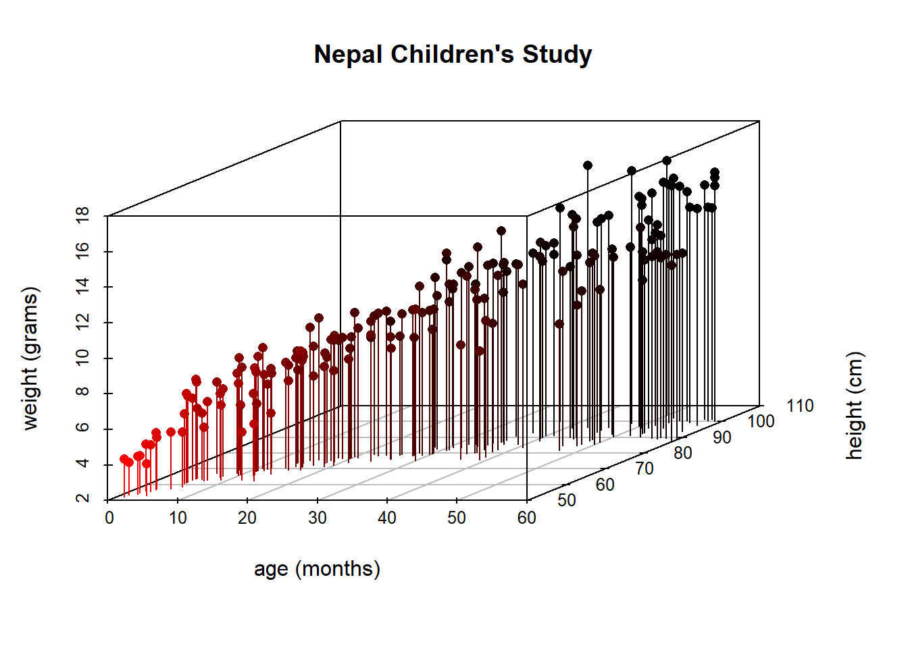

library(tidyverse)
library(ggplot2)
library(splines)
library(data.table)
library(scatterplot3d)
library(rgl)Analysis1
Goal
The purpose of this analysis is to explore the relationship between age (in months) and weight (in kilogram) among 185 infants aged 0 to 60 months in Nepal.
Method
To model the relationship between children’s weight and age, we employed three approaches: (1) simple linear regression as a baseline model; (2) multiple linear regression incorporating linear/cubic splines of age to capture potential non-linear associations; and (3) a semi-parametric natural spline approach to ensure stable estimates at the boundaries of the age distribution. Additionally, we extended our multiple linear regression framework to adjust for height as a covariate, enabling assessment of the age-weight relationship independent of height. Spline models were implemented using restricted cubic basis functions with carefully selected knots to balance flexibility and parsimony.
We checked modeling assumptions, utilized visualization to compare the goodness of fit of each model. We also compared cross-validated MSEs to assess fitting accuracy across models and to select the optimal one.
Note
This is a class project from the Method in Biostatistics III class under Dr. Elizabeth Colantuoni.
Analysis
nepalantro <- read_csv("nepal.anthro.csv")
View(nepalantro)
# Select the first observation for analysis
nepalantro <- nepalantro %>% filter(num == 1) %>% select(sex, wt, ht, age) %>% mutate(wt = as.numeric(wt), ht = as.numeric(ht))
nepalantro[nepalantro == "."] <- NA
nepalantro <- nepalantro[complete.cases(nepalantro),]
nepalantro <- nepalantro[order(nepalantro$age), ]A Visualization on the Trend of Weight as Age in Months Increases
# Kernel smooth
ks.fit <- with(nepalantro, ksmooth(age,wt, bandwidth=20))
# Plot
ggplot(data=nepalantro, aes(x=age,y=wt)) +
geom_point(aes(color=as.factor(sex)), position=position_jitter(width=0.1,height=0.1),alpha=0.7) +
geom_smooth(aes(linetype="ns"),method="lm", formula=y~ splines::ns(x,3),se=FALSE) +
geom_smooth(aes(linetype="loess"),method="loess",span=0.5,se=FALSE) +
geom_line(aes(x=age,y=ks.fit$y,linetype="kernel"))+
labs(x="Age(months)",y="Weight(kg)",title="Nepali Children Study") +
scale_colour_manual(name="Gender",values=c("1"="red","2"="green"), labels=c("Male","Female")) +
scale_linetype_manual(name="Smoothing", values= c(ns="dotted",loess="dashed",kernel="longdash")) +
theme_bw() +
theme(plot.title= element_text(hjust=0.5)) +
scale_x_continuous(breaks=seq(0,60,6),limits=c(0,60))
#pick three ages, 6, 30, 60, calculate mean weight
setDT(nepalantro)
result <- nepalantro[age %in% c(12, 36, 60), .(Mean_Weight = mean(wt, na.rm = TRUE), Sd_Weight = sd(wt, na.rm = TRUE)), by = age] # . means make a list
print(result) age Mean_Weight Sd_Weight
<num> <num> <num>
1: 12 6.914286 1.0838644
2: 36 11.025000 1.5452693
3: 60 12.150000 0.3535534A Summary on the Trend of Weigth by Sex
ggplot(data=nepalantro, aes(x=age,y=wt,color = as.factor(sex))) +
geom_point(aes(color=as.factor(sex)), position=position_jitter(width=0.1,height=0.1),alpha=0.7) +
geom_smooth(method = "loess", span = 0.5, se = FALSE) +
labs(x="Age(months)",y="Weight(kg)",title="Nepali Children Study") +
scale_colour_manual(name="Gender",values=c("1"="red","2"="green"), labels=c("Male","Female")) +
theme_bw() +
theme(plot.title= element_text(hjust=0.5)) +
scale_x_continuous(breaks=seq(0,60,6),limits=c(0,60))
setDT(nepalantro)
result <- nepalantro[age %in% c(12, 36, 60), .(Mean_wt = mean(wt)), by = .(sex, age)]
print(result) sex age Mean_wt
<num> <num> <num>
1: 2 12 7.283333
2: 1 12 4.700000
3: 2 36 11.033333
4: 1 36 11.020000
5: 1 60 12.150000Simple Linear Regression
slr <- lm(wt ~ I(age - 12), nepalantro)
ggplot(data = nepalantro, aes(x = age, y = wt)) + geom_point(aes(color = as.factor(sex)),
position = position_jitter(width = 0.1, height = 0.1), alpha = 0.7 ) +
geom_smooth(aes(linetype = "slr"), method="lm", col="black", span = 0.5, se = FALSE) +
geom_smooth(aes(linetype = "ns"), method = "lm", formula = y ~ splines::ns(x,3), se = FALSE) +
geom_smooth(aes(linetype = "loess"), method = "loess", span = 0.5, se = FALSE) +
geom_line(aes(x = age, y = ks.fit$y, linetype = "kernel")) +
labs(x = "Age (months)", y = "Weight (kg)", title = "Nepali Children Study") + # modify axis,title
scale_colour_manual(name = "Gender",
values = c("1" = "red", "2" = "green"),
labels = c("Male", "Female")) +
scale_linetype_manual(name="Smoothing", values = c(ns="dotted",loess="dashed",kernel="longdash", slr = "solid")) +
theme_bw() +
theme(plot.title = element_text(hjust = 0.5)) +
scale_x_continuous(breaks=seq(0,60,6),limits=c(0,60))
Important
The simple linear regression over-estimates weight for children under 6 months and under-estimates weight for children above 51 months.The simple linear regression also has an assumption of equal variances, meaning that the variation of weight should be roughly the same across different ages. However, as age increases, the variation in observed weights for a given age increases. Therefore, the simple linear regression is not a good option to accuratly model the weight-age association.
Multiple Linear Regression With Linear and Cubic Splines
# Linear Spline
nepalantro$age_c <- nepalantro$age - 6
nepalantro$age_sp6 <- ifelse(nepalantro$age > 6, nepalantro$age - 6, 0)
nepalantro$age_sp12 <- ifelse(nepalantro$age > 12, nepalantro$age - 12, 0)
mlr1 <- lm(wt ~ age_c + age_sp6 + age_sp12, data = nepalantro)
# Cubic Regression Spline
nepalantro$age_2 <- (nepalantro$age - 6)^2
nepalantro$age_3 <- (nepalantro$age - 6)^3
nepalantro$age_cbs <- ifelse(nepalantro$age > 6, (nepalantro$age-6)^3, 0)
mlr2 <- lm(wt ~ age_c + age_2 + age_3 + age_cbs, data = nepalantro)
d <- data.frame(
age = c(nepalantro$age, nepalantro$age),
fittedvalues = c(mlr1$fitted.values, mlr2$fitted.values),
Spline = c(rep("Linear Spline", nrow(nepalantro)), rep("Cubic Spline", nrow(nepalantro)))
)
ggplot(data=nepalantro,aes(x=age,y=wt)) +
geom_jitter(alpha=0.7)+theme_bw() + #geom_jitter plots dots
geom_line(data=d ,aes(x=age, y=fittedvalues,color=Spline)) +
labs(x="Age(months)",y="Weight(kg)",title="NepaliChildrenStudy") +
theme(plot.title=element_text(hjust=0.5)) +
scale_x_continuous(breaks=seq(0,60,6),limits=c(0,60))+
scale_color_manual(values=c("red","blue"))
Natural Spline Regression
Natural spline is a
mlr3 <- lm(wt ~ ns(age, 3), data = nepalantro)
d <-data.frame(age=c(d$age,d$age,d$age),
fittedvalues= c(mlr1$fitted.values,mlr2$fitted.values,mlr3$fitted.values),
Spline=factor(c(rep("LinearSpline", nrow(nepalantro)), rep("CubicSpline", nrow(nepalantro)), rep("NaturalCubicSpline", nrow(nepalantro))),
levels= c("LinearSpline","CubicSpline","NaturalCubicSpline")))
ggplot(data=nepalantro,aes(x=age,y=wt)) +
geom_jitter(alpha=0.7) +theme_bw()+
geom_line(data=d,aes(x=age, y=fittedvalues,color=Spline)) +
labs(x="Age(months)",y="Weight(kg)",title="NepaliChildrenStudy") +
theme(plot.title=element_text(hjust=0.5))+
scale_x_continuous(breaks=seq(0,60,6),limits=c(0,60)) +
scale_color_manual(values=c("blue","red","green"))
Cubic Spline and Natural Cubic Spline performs similar. Natural spline with 3 degrees of freedom looks smoother than cubic spline.
Selecting Models – Comapring Cross-Validated MSEs
Model fitting across models was assessed based on 10 fold cross-validated mean squared error.
set.seed(12345)
id_rand <- runif(nrow(nepalantro))
nepalantro$cv_group <- ntile(id_rand, 10)
cv_error <- matrix(nrow=10,ncol=8)
cv_error_mlr1 <- numeric(10)
cv_error_mlr2 <- numeric(10)
for (j in 1:10) {
test <- nepalantro[nepalantro$cv_group == j, ]
train <- nepalantro[nepalantro$cv_group != j, ]
for (df in 1:8) {
fit_ns <- lm(wt ~ ns(age, df = df), data = train)
pred_ns <- predict(fit_ns, test)
cv_error[j, df] <- mean((test$wt - pred_ns)^2)
}
fit_mlr1 <- lm(wt ~ age_c + age_sp6 + age_sp12, data = train)
pred_mlr1 <- predict(fit_mlr1, test)
cv_error_mlr1[j] <- mean((test$wt - pred_mlr1)^2)
fit_mlr2 <- lm(wt ~ age_c + age_2 + age_3 + age_cbs, data = train)
pred_mlr2 <- predict(fit_mlr2, test)
cv_error_mlr2[j] <- mean((test$wt - pred_mlr2)^2)
}
MSE <- cbind(cv_error, cv_error_mlr1, cv_error_mlr2)
mean_mse <- apply(MSE, 2, mean)
par(mfrow = c(1, 2), mar = c(4, 4, 3, 1))
plot(1:8,mean_mse[1:8],ylim=c(1,2.5),xlab="DegreesofFreedom",ylab="MSE",
main="CrossValidatedMSE NaturalSpline",xaxt="n",pch=17,col=1:8)
text(1:8, mean_mse[1:8]-0.2,labels=signif(mean_mse[1:8],3),col=1:8)
axis(1,at=c(1:8),labels=1:8,tick=FALSE)
plot(9:10,mean_mse[9:10],ylim=c(1,2.5),xlab = "Model", ylab="MSE",
main="CrossValidatedMSE Regression",xaxt="n",pch=17,col=9:10)
text(9:10, mean_mse[9:10]-0.2,labels=signif(mean_mse[9:10],3),col=9:10)
axis(1,at=c(9:10), labels=c("MLR_LinearSpline", "MLR_CubicSpline"),tick=FALSE)
Important
Cubic spline regression achieved optimal predictive performance (CV-MSE = 1.80). Natural spline with a degrees of freedom of 2 performs comparably well (MSE = 1.83 at df=2). Cubic spline regression results in a 9.1% error reduction over the linear benchmark (MSE = 1.98)
Height-adjusted Age-weight Association
plot3d(nepalantro$age, nepalantro$ht, nepalantro$wt)
scatterplot3d(nepalantro$age, nepalantro$ht, nepalantro$wt, pch = 16, type = "h", highlight.3d = TRUE,
xlab = "age (months)", ylab = "height (cm)",
zlab = "weight (grams)", main = "Nepal Children's Study")
Height is highly associated with weight and age.
# Simple Linear Regression, adjusted with height
mlr3 <- lm(wt ~ I(age-12) + I(ht-85), data=nepalantro)
summary(mlr3)
Call:
lm(formula = wt ~ I(age - 12) + I(ht - 85), data = nepalantro)
Residuals:
Min 1Q Median 3Q Max
-2.48498 -0.53548 0.01508 0.51986 2.77917
Coefficients:
Estimate Std. Error t value Pr(>|t|)
(Intercept) 11.154244 0.256679 43.456 <2e-16 ***
I(age - 12) 0.005368 0.010169 0.528 0.598
I(ht - 85) 0.228086 0.014205 16.057 <2e-16 ***
---
Signif. codes: 0 '***' 0.001 '**' 0.01 '*' 0.05 '.' 0.1 ' ' 1
Residual standard error: 0.9035 on 182 degrees of freedom
Multiple R-squared: 0.9163, Adjusted R-squared: 0.9154
F-statistic: 995.8 on 2 and 182 DF, p-value: < 2.2e-16summary(slr)
Call:
lm(formula = wt ~ I(age - 12), data = nepalantro)
Residuals:
Min 1Q Median 3Q Max
-3.7237 -0.8276 0.1854 0.9183 4.5043
Coefficients:
Estimate Std. Error t value Pr(>|t|)
(Intercept) 7.328565 0.148016 49.51 <2e-16 ***
I(age - 12) 0.157003 0.005845 26.86 <2e-16 ***
---
Signif. codes: 0 '***' 0.001 '**' 0.01 '*' 0.05 '.' 0.1 ' ' 1
Residual standard error: 1.401 on 183 degrees of freedom
Multiple R-squared: 0.7977, Adjusted R-squared: 0.7966
F-statistic: 721.4 on 1 and 183 DF, p-value: < 2.2e-16A multiple linear regression was used to describe the association of weight and age of 185 Nepal children aged 1 to 60 months after adjusting for height. We estimated that among children of same height,the average difference in weight of children who differ in age by 1 month is 0.005kg (95% confidence interval: -0.015 to 0.025). In the regression of weight on age,we estimated that the average difference in weight of children who differ by one month of age is 0.157kg (95% confidence interval: 0.145 to 0.169). After adjusting for height, weight and age are not associated.
Summary
We investigated the non-linear relationship between age and weight using multiple linear regression with spline functions. Among the tested models (linear splines, natural splines with 2–8 degrees of freedom, and cubic splines), the cubic spline regression demonstrated superior performance, reducing cross-validated mean squared error (CV-MSE) by 9.1% compared to simple linear regression.
Additionally, we fit a multiple linear regression model of weight on both age and height. After adjusting for height, the association between age and weight was no longer statistically significant.